0ссылок на разделы с главного экрана: ссылка «Разделы» есть только в старом виде, а в новом её прячет стиль
4 · ∞нажатия до «Табеля» на компьютере (через ★ → «Прежний вид» → «Разделы»); на телефоне дойти нельзя — ссылка скрыта
7 · 1разделов в одном меню на всех страницах; до любого раздела одно нажатие, до вкладки — не больше двух
Суть до дела
Зачем
Руководитель и прораб должны с любого экрана за одно нажатие попасть в «Отчёты», «Технику» или «События» и понимать, где находятся. Сейчас главный экран и разделы живут каждый со своим меню, и одно о другом не знает.
Сделал бы одну оболочку на все страницы: рейка разделов по задачам слева, площадка и поиск в шапке, вкладки раздела под шапкой, на телефоне нижний таб-бар. Пульт стал бы одним из разделов («Камеры»), а не отдельным приложением.
Образец
Verkada Command: рейка + «Площадки» + поиск сверху. Samsara Fleet: вкладки раздела, список + карта. Рейка в наших разделах (nav.js) уже устроена так же — её и надо распространить на главный экран.
Ловушка
Делать меню «по технологиям» (3D, Кино, Табло) и по пачкам разработки (группы «Кабинет», «Связь», «Примеры» — как в коде), а не по задачам человека. И выпускать в главное меню 12 страниц-примеров наравне с живыми.
1 · Что есть сейчас: опись
По коду ветки показа (src/sokol/web.py, views.py, page_*.py, ui/*.html, ui/js/nav.js, ui/js/v2/shell.js). В браузере на живом пульте не проверял: Mac спит, проверено по коду и по снимкам 25.10.
Адрес
Что это
Откуда сейчас есть ссылка
В меню?
Роль
Данные
/ → вид «Камеры» (c3)
Главный экран: 3 камеры, лента событий, план, шкала
Логотип и кнопка «Пульт» на всех страницах разделов
вкладки видов в шапке пульта
все; клиент — без ответов
записи
/?v=c2 · c4 · c5 · c7 · c6 · c1
Виды пульта: Пульт (табло), План, 3D, Журнал, Сводка, Кино
вкладки в шапке пульта
да, только на главном
все
записи
/?mode=cams · /?mode=log
Прежний вид пульта и «Машины»; в нём вкладки «Насколько точно», «Как выбирали»
«весь журнал» в ленте событий; «Прежний вид» в панели ★
нет
все
записи
report.html
Рапорт за смену
«Рапорт по записи» в виде «Пульт»; нижняя строка прежнего вида
нет в рейке
все
записи
qm-page.html
«Разделы» — карточки всех разделов
только нижняя строка прежнего вида; в новом виде строка скрыта (v2.css), на телефоне ссылка скрыта (app.css)
нет
все
—
objects.html · profile.html
Мои объекты · Профиль
рейка разделов, группа «Кабинет»
рейка
все
записи + пример
site.html
Объект: люди
рейка, «Объект»
рейка
все
записи + пример
stats · daily · tabel
Статистика · Ежедневный отчёт · Табель
рейка, «Отчёты»
рейка
все
записи; табель — заявки примером
incidents · safety
Инциденты · Опасные зоны
рейка, «Безопасность»
рейка
все
записи; зоны — с примером
money · calc · pilot
Простой в ₽ · Калькулятор потерь · Кампус: день
рейка, «Деньги»
рейка
все
записи + пример
bot.html
Бот «Сокол» в Telegram
рейка, группа «Связь» — последней, под 12 примерами: группы нет в порядке nav.js
рейка (в самом низу)
оператор, руководитель
живое
12 страниц ex-* · ppe · volume · kpp
План и прогресс, Техника и документы, Как устроено, Госзаказ, ЖК, Магазин, Цех, Офис, Как начать, Каски, Объём, Номер на КПП
рейка, «Примеры», метка «пример»
рейка (12 пунктов из 25)
все
пример
next.html
Что дальше
ни одной ссылки — сирота
нет
все
пример
login.html
Вход
сама, без входа
—
—
—
Ещё по коду: при переходе пульт ↔ разделы площадка теряется — keepQuery() в theme.js переносит только fixtures, records, theme, без site; «Пульт» из разделов всегда открывает кампус. В рейке нет пункта «Пульт» — вернуться можно только логотипом или кнопкой в шапке. На телефоне в нижнем меню разделов первые четыре пункта — «Мои объекты», «Профиль», «Люди», «Статистика»: профиль занимает место, камер нет. Два «журнала»: вкладка «Журнал» (новый вид) и «весь журнал» в ленте ведёт в прежний вид.
2 · Карта «как попасть сейчас»
3 · Как у профи
Настоящие экраны продуктов: кадры из видео-обзоров и справочных центров (ссылка — под кадром). Смотрим не облик, а как устроено меню.
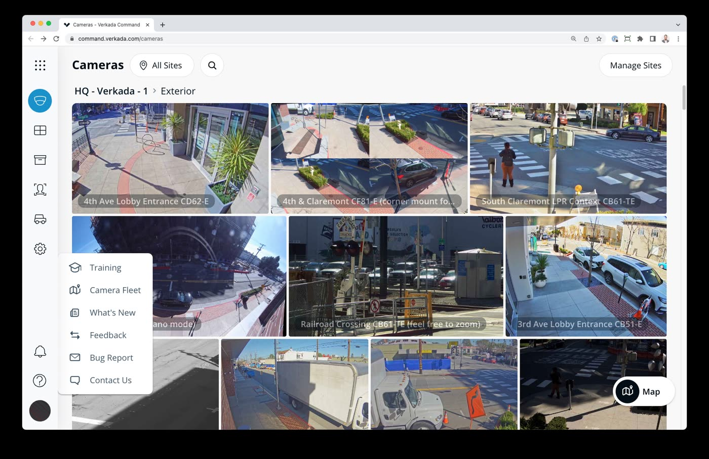
Verkada Command
Экран «Cameras»: слева узкая иконочная рейка (сетка камер, архивы, люди, техника, настройки), в левом верхнем углу иконка-сетка 3x3 — переключатель продуктов.
В заголовке рядом с названием страницы: чип «All Sites» (переключатель площадок), круглая кнопка поиска, справа «Manage Sites»; ниже крошка «HQ - Verkada - 1 > Exterior».
Кому: оператор/прораб: сетка камер и живое; руководитель: Manage Sites, Admin · источник
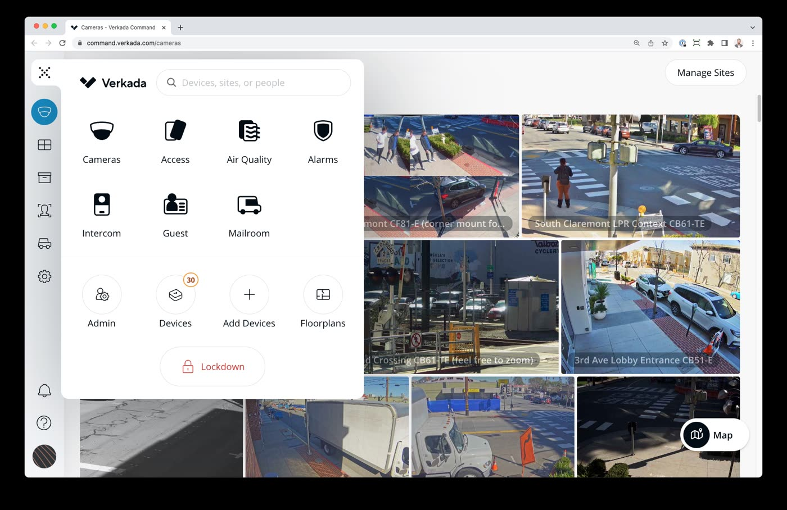
Verkada Command
Меню продуктов открывается иконкой-сеткой слева вверху: сверху поле «Devices, sites, or people» (глобальный поиск), ниже плитки «Cameras · Access · Air Quality · Alarms · Intercom · Guest · Mailroom».
Нижний ряд: «Admin · Devices (бейдж 30) · Add Devices · Floorplans» и красная кнопка «Lockdown».
Блог: список продуктов зависит от роли и от купленных продуктов; на странице продукта слева меню именно этого продукта (для Cameras: Grids, Archives, People & Vehicle Analytics, настройки камер).
Кому: руководитель: Admin, Devices, Floorplans; оператор: Cameras, Alarms · источник
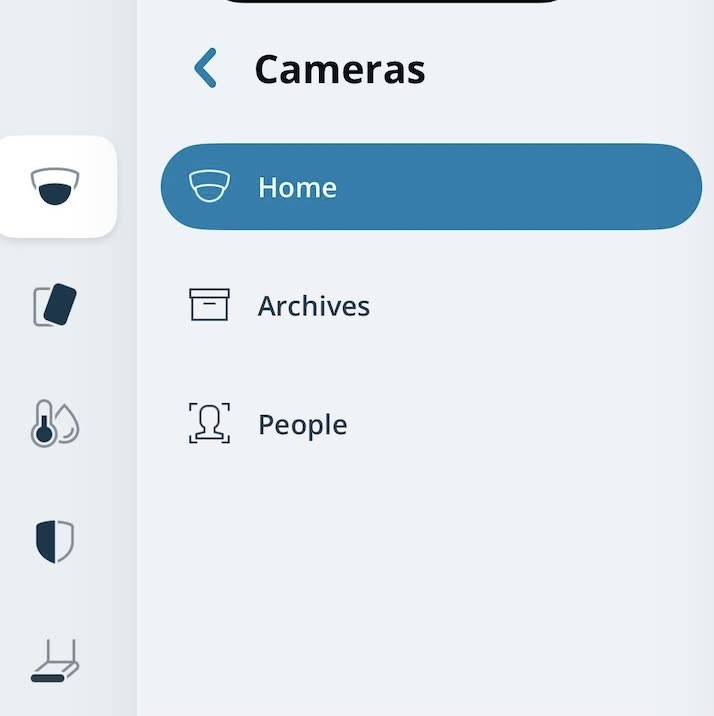
Verkada Command (мобильное приложение)
Нижнего таб-бара нет: слева колонка иконок продуктов, справа подстраницы выбранного продукта; для Cameras это «Home · Archives · People».
Справка: «On the top left, tap to open an expanded menu, where you can see products on the left and subpages on the right»; быстрее: свайп вправо и тап по иконке продукта.
Внизу меню: Help, Scenarios (красный), Devices, Add Device; тап по названию организации открывает данные аккаунта и переключение организации.
Кому: оператор в поле; Org Settings (роли, группы) в приложении только у админа · источник
Левое меню на картинке блога (может быть устаревшим): «Search, Overview, Compliance, Safety, Maintenance, Dispatch, Fuel & Energy, Documents, Reports → Dashboard»; внизу шестерёнка, «?», Feedback и кнопка сворачивания; вверху «Fleet» с иконками чата и колокольчика.
Мобильное приложение на той же картинке: поиск «Search for asset or driver» и нижний таб-бар «Map · Safety · Messages · Alerts» (прочитано с мелкой картинки, в тексте справки не подтверждено).
Блог: вертикальная навигация слева; меню и список машин сворачиваются, чтобы расширить карту. Видимость разделов зависит от лицензий и роли (kb.samsara.com «Dashboard Menus» отдала 403, не проверено).
Кому: руководитель: Reports/Dashboard, Safety; диспетчер: Dispatch, Map · источник
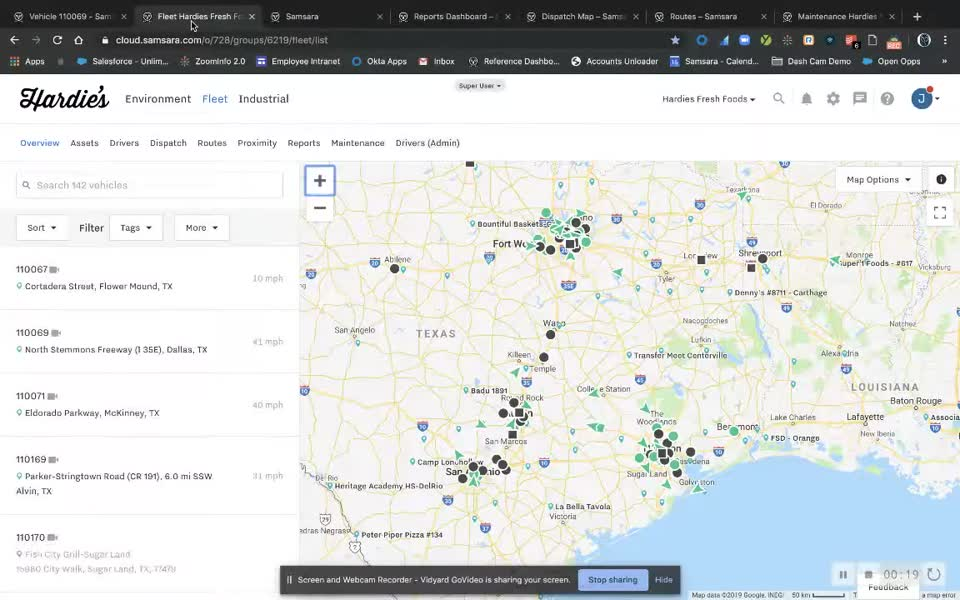
Samsara (прежний интерфейс)
Сверху продукты «Environment · Fleet · Industrial», под ними вкладки раздела «Overview · Assets · Drivers · Dispatch · Routes · Reports…»
Организация — переключателем справа вверху; слева поиск по 142 машинам и список, справа карта
Левое тёмное меню из четырёх групп: Core «Search, Map, Assets, Sites, Customers»; Apps «Access Management, Emissions Reporting, My Network, Service Management, Applications»; Configure «Reports, Alerts, Groups»; внизу «Notifications, Attention List (бейдж 88), Support, Classic Manager, Administration».
Поиск первым пунктом меню, всегда под рукой; приложения закрепляются звёздочкой.
Внизу слева профиль с названием организации и выпадающим списком (настройки профиля), вверху кнопка сворачивания меню.
Кому: руководитель парка: Reports, Alerts, Attention List; диспетчер: Map, Assets, Sites · источник
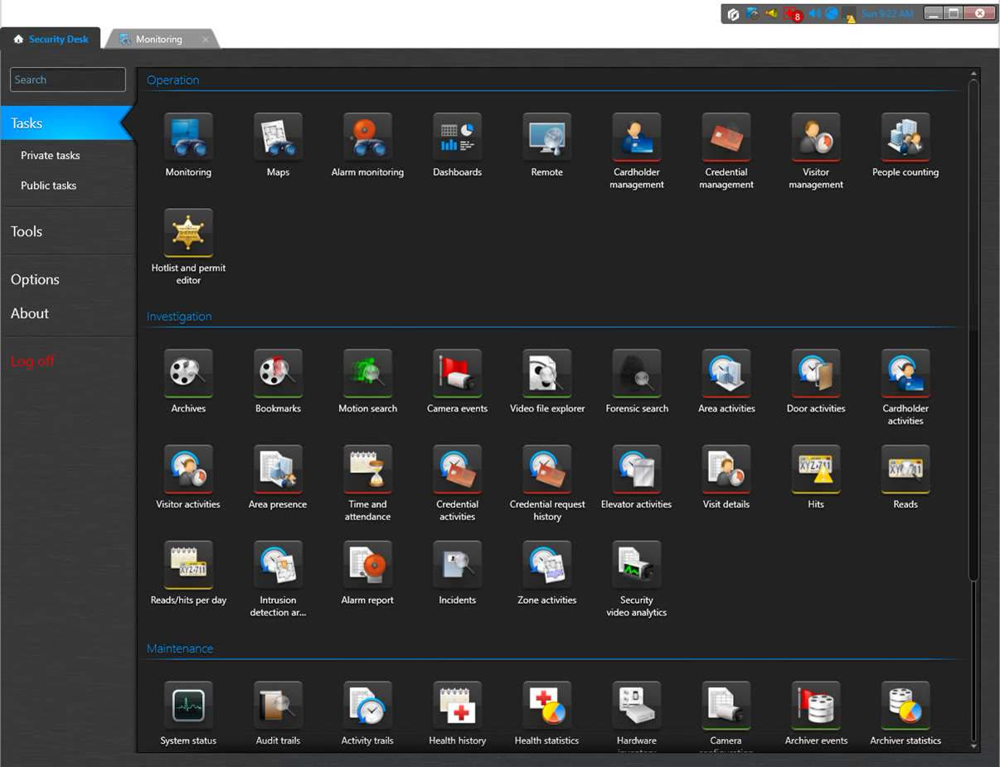
Genetec Security Center (Security Desk)
Главная (вкладка Home): слева «Search · Tasks (Private tasks, Public tasks) · Tools · Options · About · Log off»; справа сетка задач по разделам «Operation / Investigation / Maintenance» (Monitoring, Maps, Alarm monitoring, Archives, Bookmarks, Motion search, Incidents, System status…).
Официальная справка 5.11: домашняя страница из шести зон: поиск по задачам (название, категория, описание), Private tasks, Public tasks, Tools, Options, Favorites and Recent items.
Каждая открытая задача становится отдельной вкладкой вверху; категории Administration, Operation, Investigation, Maintenance названы в обучающей презентации, а не в официальной справке.
Кому: оператор: Operation; расследование: Investigation; админ: Maintenance · источник
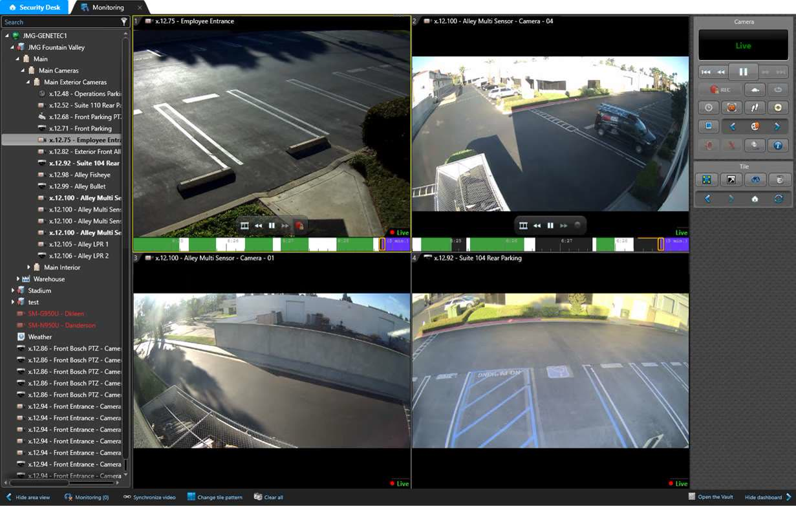
Genetec Security Center (Security Desk)
Задача «Monitoring» открыта вкладкой рядом с вкладкой «Security Desk» вверху; слева дерево зон «Area view» с поиском, по центру плитки камер 2x2, справа панели «Camera» и «Tile».
Внизу панель «Hide area view · Monitoring · Synchronize video · Change tile pattern · Clear all · Open the Vault · Hide controls».
Верхние вкладки на схеме 2023 R1: «Views · Exports · Search · Alarm Manager · Incidents · System Monitor». В 2020 R3 по справке: Live, Playback, Search, Alarm Manager, System Monitor; Access Control, LPR, Transact появляются только с лицензией.
Зоны схемы: 1 вкладки, 2 левая панель «Views» и «Cameras», 3 часы и значки, 4 панель Export / Evidence lock / Setup, 5 таймлайн внизу с переключателем PLAYBACK · LIVE.
Справка: если вкладок не видно, нет прав доступа к ним (права администратор задаёт по ролям).
Кому: оператор диспетчерской: Views; руководитель/СБ: Alarm Manager, Incidents, System Monitor · источник
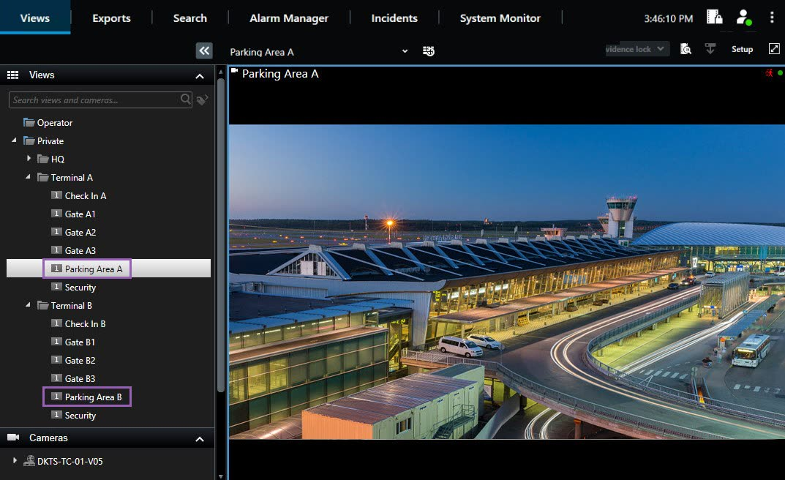
Milestone XProtect Smart Client
Вкладка Views: слева дерево Views → Private → Terminal A/B → виды (Gate A1, Parking Area A…), ниже сворачиваемый блок «Cameras»; в левой панели поле «Search views and cameras…».
Над видом выпадающий список текущего вида, справа Export / Setup / полный экран; вверху те же вкладки «Views · Exports · Search · Alarm Manager · Incidents · System Monitor».
Вкладка Search: слева «Search filters» (время, выбор камер, кнопка поиска), в центре «71 results» с таймлайном и плитками, справа превью выбранного результата.
Поиск по видео и метаданным (движение, закладки, люди, транспорт) вынесен в отдельную вкладку, а не в строку шапки.
Кому: расследование после инцидента: служба безопасности, руководитель · источник
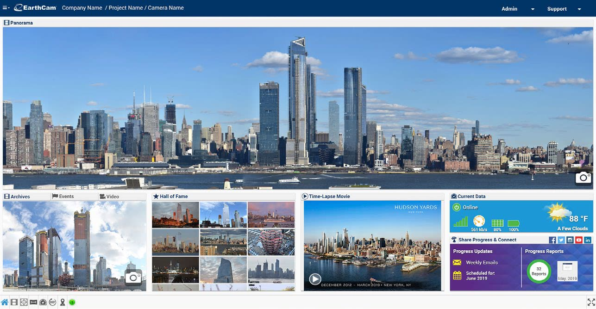
EarthCam Control Center
Верхняя синяя полоса: логотип и крошка «Company Name / Project Name / Camera Name», справа выпадающие «Admin» и «Support».
Внизу иконочная Main Navigation Bar; по мануалу: Camera Dashboard, Image Archives, Camera Control, Auto-Generated Panorama, Data Dashboard, Photography Documentation, Map/Aerial/Satellite View, Full Screen Mode.
Главный экран камеры: панорама плюс плитки «Archives · Events · Video · Hall of Fame · Time-Lapse Movie · Current Data» на одной странице.
Кому: руководитель/маркетинг: Hall of Fame, Progress Reports; прораб: Camera Control, Archives · источник
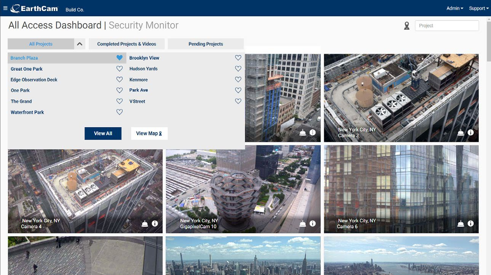
EarthCam Control Center
«All Access Dashboard | Security Monitor»: вкладки «All Projects · Completed Projects & Videos · Pending Projects», список проектов с кнопками «View All» и «View Map», поле «Project» для поиска.
Переключатель объектов это сам экран-обзор: сетка камер по всем объектам, дальше вход в проект.
Шапка с крошкой и «Admin / Support» сохраняется.
Кому: руководитель компании с несколькими объектами · источник
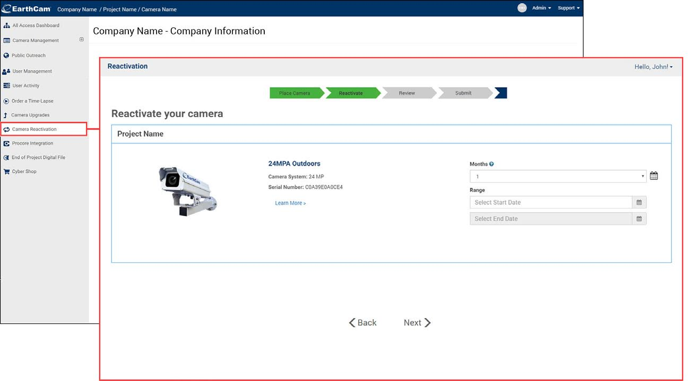
EarthCam Control Center
Админ-раздел «Company Information»: слева вертикальное меню (по мелкому тексту: All Access Dashboard, Camera Management, Public Outreach, User Management, User Activity, Order a Time-Lapse, Camera Upgrades, Camera Reactivation, Procore Integration, End of Project Digital File).
Названия прочитаны с мелкой картинки: часть может быть неточной.
справка закрыта для ботов (403) — факты из поиска, не проверено
Верхняя панель показывает компанию и проект; «Change Project» открывает список доступных проектов, внизу кнопка «Switch Company» (если компаний несколько).
Меню «Project Tools» (раньше «Toolbox») группирует инструменты по дисциплинам, видны только доступные; Favorites до 10 инструментов на пользователя и проект.
Project Home: «Project Overview, My Open Items, My Dashboards»; отчёты через инструмент Reports (Project 360 Reporting). В Android меню сверху «Project & Company Selector». Ctrl+K не найдено.
Кому: руководитель проекта: Reports, дашборды Home; прораб: инструменты проекта и мобильное приложение · источник
Cat VisionLink · без картинки
справка закрыта для ботов (403) — факты из поиска, не проверено
По FAQ дилера, страницы справки по ролям: «Needs Review, Assets, Map, Tasks, Planned Maintenance, Health, Utilization, Asset Operation, Manage, Asset Details»; посадочная страница названа «Dashboard» (справка Getting Started); в левом меню есть «Legal».
«Needs Review» это список техники, требующей внимания, оттуда назначаются задачи; пользователь без активной площадки попадает на «Assets». Точный порядок и подписи меню — не проверено.
Кому: руководитель парка: Dashboard, Needs Review, Utilization; оператор: Assets, Map · источник
Общее у всех
Рейка слева + переключатель площадок — Verkada («All Sites»), Trackunit («Sites»), Samsara, EarthCam («All Access Dashboard»), Procore («Change Project»). Верхние вкладки — у настольных диспетчерских (Milestone, Genetec), и там это режимы работы, а не разделы.
Поиск на всё — в меню или шапке: Verkada «Devices, sites, or people», Trackunit — первый пункт меню, Genetec — поиск по задачам. Горячая клавиша Ctrl K в этих источниках не найдена; у нас она — дубль кнопки поиска, как в веб-продуктах.
Разделы по задачам и правам: Genetec — «Operation · Investigation · Maintenance», Trackunit — «Core · Apps · Configure · Admin»; Milestone и Verkada прячут то, на что нет прав. Руководителю — отчёты и оповещения, оператору и прорабу — камеры и живое.
Крошки «Компания / Объект / Камера» — EarthCam и Verkada: человек всегда видит, где он.
Телефон проще компьютера: Verkada — меню «продукты слева, подстраницы справа», Samsara для водителя — один экран крупных кнопок; нижний таб-бар Samsara «Map · Safety · Messages · Alerts» — по мелкой картинке, не проверено. Мы берём таб-бар: прорабу одной рукой так быстрее.
4 · Новая структура: 7 разделов по задачам
Каждая нынешняя страница получает одно место. Внутри раздела — вкладки. Площадка — переключатель в шапке, не пункт меню. Примеры — одной полкой в «Задачах ТЗ» с меткой «пример».
Обзор руководитель · домой
Смена ?v=c2
Сводка дня ?v=c6
Все площадки objects.html
Камеры прораб · домой
Стена ?v=c3
Одна камера ?v=c1
План ?v=c4
3D ?v=c5
Техника
Журнал машин ?v=c7 + ?mode=log
Простой в ₽ money.html
События с числом вопросов
Вопросы «подтверди»
Инциденты incidents.html
Опасные зоны safety.html
Люди site.html
Отчёты
Рапорт смены report.html
Ежедневный daily.html
Табель tabel.html
Статистика stats.html
Калькулятор потерь calc.html
День кампуса pilot.html
Задачи ТЗ режим показа
По пунктам ТЗ → «Показать на панели» новое
Сверх ТЗ: 12 примеров пример
Что дальше next.html
Настройки
Профиль и роли profile.html
Бот в Telegram bot.html
Насколько точно · Как выбирали
Площадки и камеры
Куда
Сейчас, с главного экрана
Вариант А, компьютер
Телефон (таб-бар)
Табель
4, не очевидно
2: «Отчёты» → «Табель» (или 1: наведение на рейку, Ctrl K «таб»)
2: «Отчёты» у руководителя; у прораба «Ещё» → «Табель»
Инциденты
4
2: «События» → «Инциденты»
2: «События» → «Инциденты»
Бот в Telegram
4, внизу под примерами
2: «Настройки» → «Бот»
2: «Ещё» → «Бот»
Другая площадка
1 (список)
1: площадка в шапке, на любой странице
1
Вопрос «подтверди»
1 (кнопка «Ответить»)
1: та же кнопка на любой странице
1
Назад на камеры
1 (логотип, кампус)
1: «Камеры», площадка сохраняется
1
5 · Два варианта прототипами
Оболочка поверх нашего главного экрана: внутри — снимки пульта 25.10 (кампус, Оберн, Уэйко) и прототипов разделов 23.10. Нажимается всё: разделы, вкладки, площадка, поиск Ctrl K, кнопка «Ответить», роль «Прораб / Руководитель», тема. Логики пульта нет.
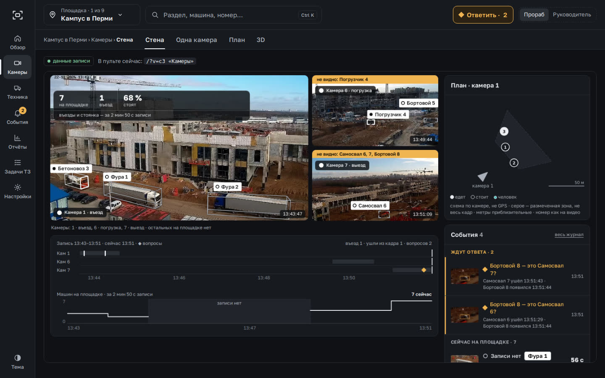
рекомендую
А · Рейка слева (как Verkada, Trackunit, наши разделы)
Слева 7 разделов иконкой и словом; наведение раскрывает вкладки. В шапке — площадка, поиск, «Ответить». Под шапкой — крошки и вкладки раздела.
в шапке тесно: на 1440 поиск и роль сжимаются в значки
два ряда вкладок подряд — легко спутать раздел и вкладку
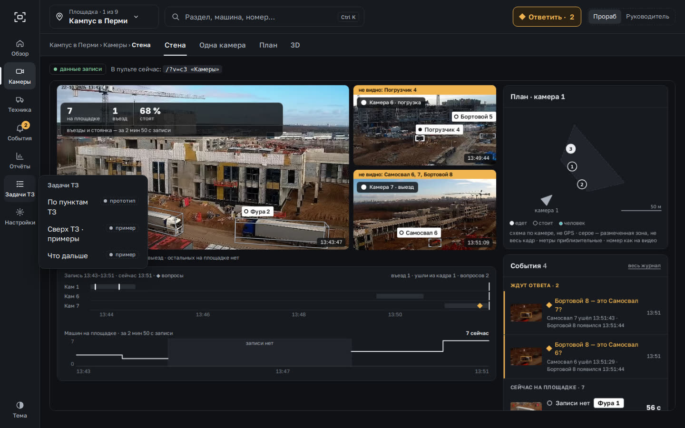
А · наведение на раздел — его вкладки
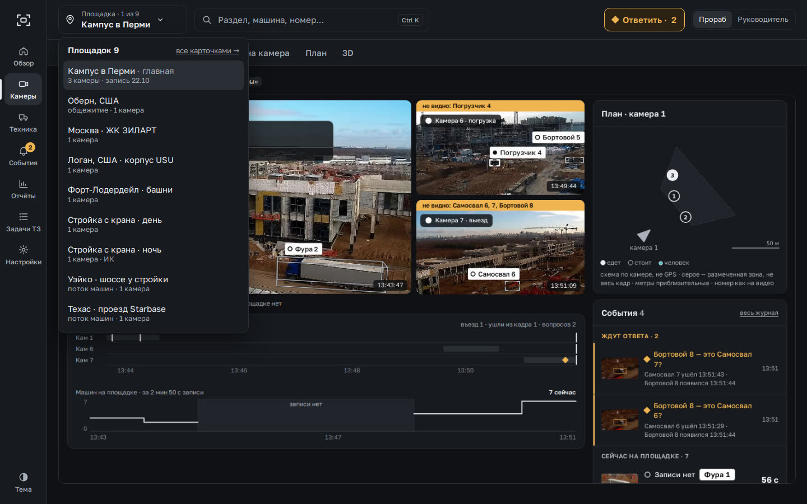
Площадок 9 — список в шапке и «все карточками»
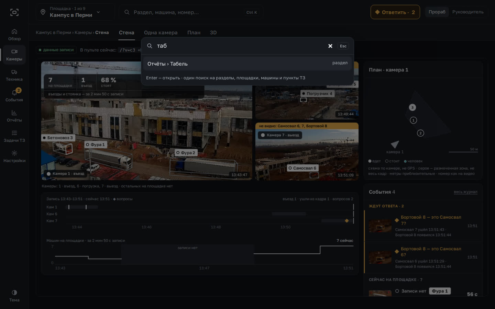
Ctrl K — разделы, площадки, машины, пункты ТЗ
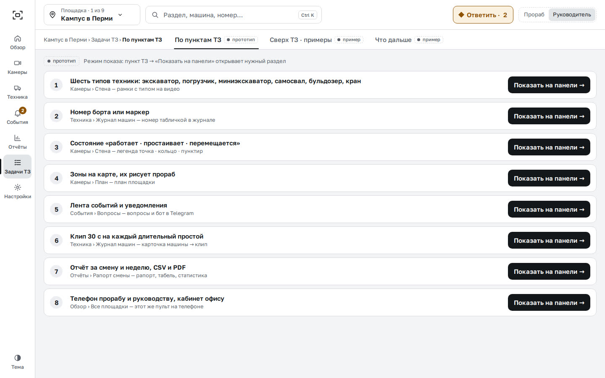
«Задачи ТЗ»: пункт → «Показать на панели»
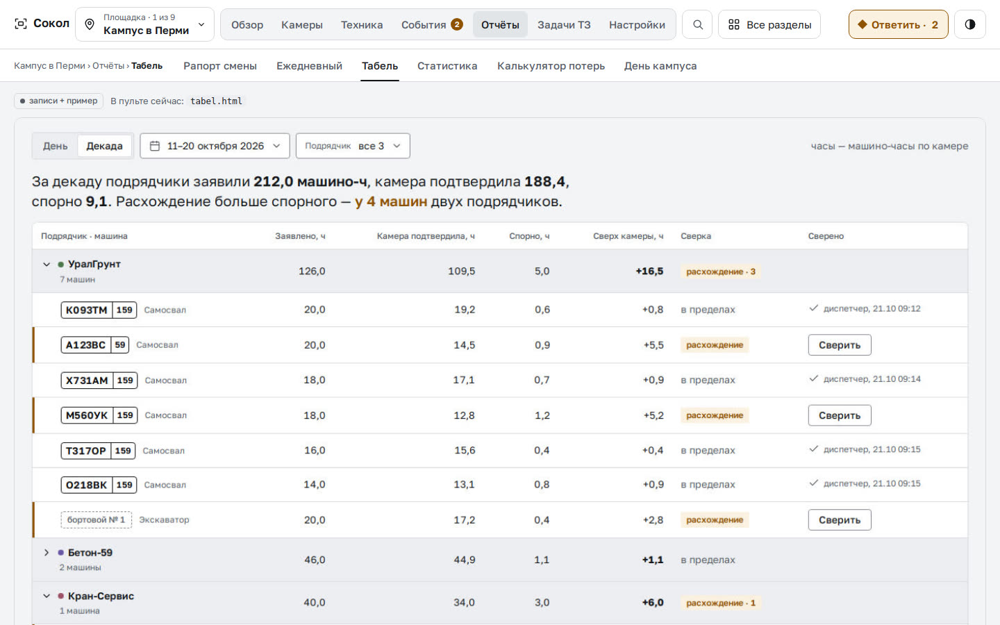
Б · светлая тема · Отчёты › Табель
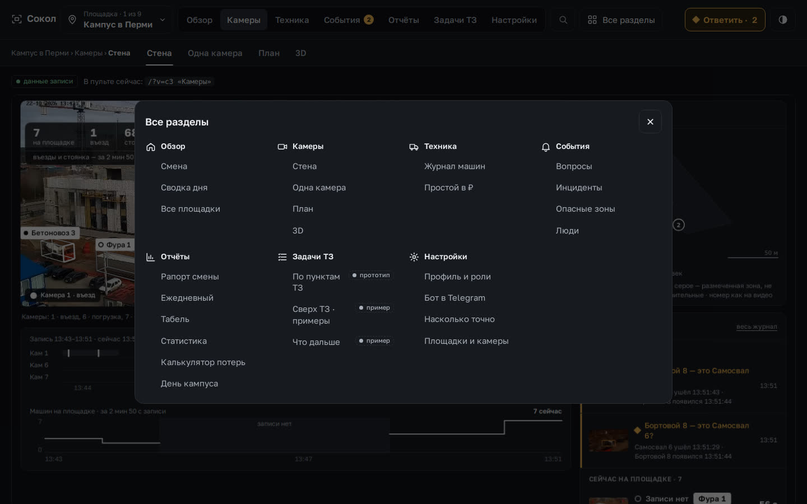
Б · «Все разделы» одним листом
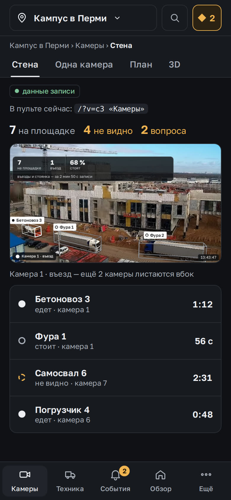
Телефон · прораб: Камеры · Техника · События · Обзор · Ещё
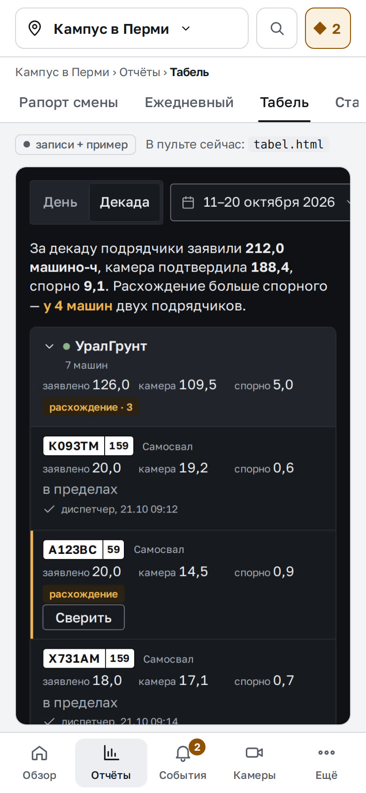
Телефон · руководитель: Обзор · Отчёты · События · Камеры · Ещё
Телефон в обоих вариантах один: нижний таб-бар из 4 разделов роли + «Ещё» (лист со всеми разделами), площадка и поиск сверху. Снимки разделов на телефоне — только тёмные: светлых телефонных снимков прототипов 23.10 нет.
6 · Рекомендация
Вариант А — рейка слева, общая для всех страниц. Наши 12 разделов уже стоят на такой рейке; не хватает, чтобы главный экран стал одним из разделов. Разделы — по задачам (Обзор · Камеры · Техника · События · Отчёты · Задачи ТЗ · Настройки), а не по пачкам кода; нынешние 7 видов пульта уходят во вкладки «Камер» и «Обзора»; 12 примеров — одной полкой в «Задачах ТЗ» с меткой «пример»; площадка — в шапке на всех страницах и не теряется при переходе.
Для показа: раздел «Задачи ТЗ» — восемь пунктов ТЗ, у каждого «Показать на панели». Руководитель видит, что каждый пункт закрыт, и попадает на нужный экран одним нажатием — это и есть сценарий показа.
Главный риск: перестройка оболочки целиком за вечер до показа — это переделка шапки главного экрана, а его только что приняли. Поэтому к 26.10 — малая правка ниже, оболочка А — после показа по выбору.
7 · Малая правка к показу 26.10
Цель: с главного экрана — одно нажатие до списка всех разделов, из любого раздела — одно нажатие обратно, площадка не теряется, порядок меню разумный. Код не трогал, это задание сборщику.
Кнопка «Разделы» в шапке главного экрана — после вкладок видов; открывает лист с той же рейкой, что на страницах разделов (loadNav → groupNav → renderRail).ui/js/v2/shell.js (~20 строк), ui/index.html (слот листа, 1–2 строки), ui/v2.css (~15 строк). Самый дешёвый запасной ход — простая ссылка на qm-page.html, 1 строка.
Пункт «Пульт» первым в рейке разделов — чтобы вернуться было в меню, а не только логотипом.src/sokol/page_site.py, NAV: 1 строка (href "./", группа «Объект», order 1).
Порядок групп: Объект · Отчёты · Безопасность · Деньги · Связь · Кабинет · Примеры. «Бот» перестаёт быть под примерами; на телефоне в нижнем меню — Пульт, Люди, Статистика, Отчёт вместо «Профиля».ui/js/nav.js, GROUPS: 1 строка; тест tests/ui/nav-035.test.mjs проверить.
Площадка не теряется при переходах — переносить site вместе с fixtures, records, theme.ui/js/theme.js, keepQuery(): 1 строка.
«весь журнал» ведёт во вкладку «Журнал» нового вида, а не в прежний вид.ui/js/v2/pages-a.js, строка 18: ./?mode=log → ?v=c7.
Группа «Примеры» свёрнута по умолчанию (раскрывается нажатием), метка «пример» остаётся.ui/js/nav.js, renderRail: ~5 строк.
Объём: 6 правок, около 50 строк в 7 файлах; тесты меню — tests/ui/nav-035.test.mjs, tests/test_qm_seam.py (на «Цехе»). Срок по замерам (bin/estimate): сборка обычно 14 мин, редко дольше 29; приёмка около 4 мин; тесты на «Цехе» около 7 мин — итого примерно 30–40 мин работы бота. Время Юлая — одно нажатие «да» и взгляд на снимок.
Не проверено: внешний вид рейки и листа на живом пульте — Mac спит, пульт на сервере не запускал. Всё в описи — по коду ветки показа (коммит b814f8a). Снимки разделов в прототипах — макеты 23.10, у живых страниц облик проще.